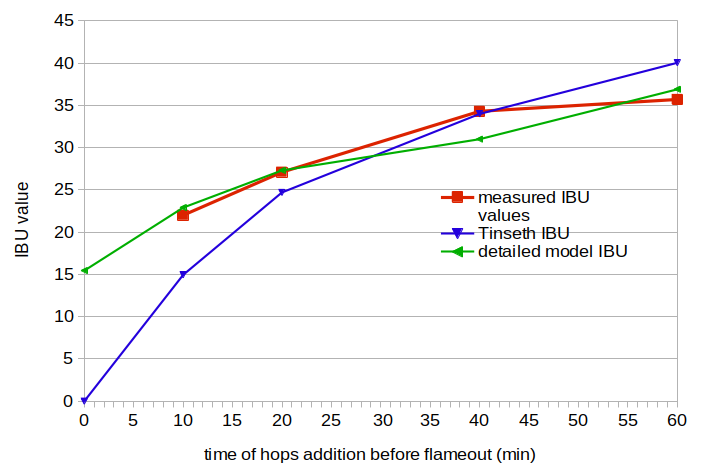
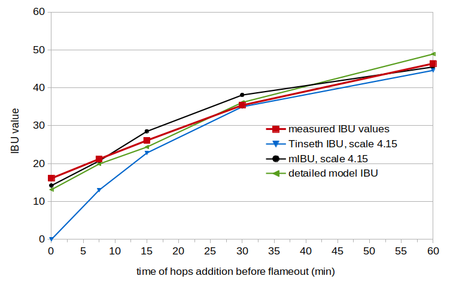

Abstract
This post summarizes two of the three experiments I conducted in order to evaluate the accuracy of the mIBU approach described earlier, specifically Experiments 1 and 3. (The second experiment is described in a separate post, "An Analysis of Sub-Boiling Hop Utilization".) The results from the current two experiments show that when estimating IBUs, it's important to have good estimates of (a) the alpha-acid rating of the hops, (b) storage conditions of the hops, (c) alpha-acid concentration in the wort, and (d) age of the beer. If these factors are accounted for, the IBU estimates in these experiments are fairly close to measured IBU values. When the wort is allowed to cool naturally after flameout for (in this case) 15 minutes, the use of the mIBU approach yields much better estimates for hop additions at flameout and with short boil times.
1. Introduction
For the first experiment, I brewed four batches of beer with hops added at different times during the boil and with forced cooling at flameout, in order to calibrate my brewing setup and resulting measured IBU values with the Tinseth IBU formula. For the third experiment, I brewed five batches, each with 15 minutes of post-flameout natural cooling, to compare the measured IBU values with values predicted by the Tinseth formula and the mIBU approach.
In both of these experiments, IBU values were measured by Analysis Laboratory. Scott Bruslind from Analysis Laboratory was very responsive and encouraging, providing a full set of measurements (including gravity, pH, and attenuation, in addition to IBUs) as well as alpha-acid measurement of hops.
2. Experiment #1
The first experiment calibrated measured IBUs obtained from my brewing setup with the standard Tinseth IBU formula. As a result of this experiment, I got some idea of how much variation to expect in IBU measurements, and I found that several factors inadvertently impacted both measured and modeled values.
2.1 Experiment #1: Methods
In this experiment, four batches of beer were brewed with forced cooling at flameout. Each batch was brewed separately: 2.0 lbs (0.91 kg) of Briess Pilsen dry malt extract in 2 G (7.6 liters) of water, with 0.60 oz (17.0 g) of Cascade hop cones (in a loose mesh bag) and a slurry of 0.08 oz (2.3 g) of Safale US-05 yeast. The boil time of the wort for all conditions was 60 minutes. The hops were added at 60 minutes (condition A), 40 minutes (condition B), 20 minutes (condition C), and 10 minutes (condition D) prior to flameout. All batches had the following targets: pre-boil volume of 2.15 G, pre-boil specific gravity of 1.043, post-boil volume of 1.45 G, and (post-boil) original gravity (OG) of 1.060. The wort was quickly force-cooled and the hops were removed immediately at flameout. The wort was left to sit, covered, for several minutes, and then 3½ quarts were decanted into a 1 G (4 liter) container. After 90 seconds of aeration (a.k.a. vigorous shaking), the yeast was pitched. Fermentation and conditioning proceeded for 19 days. The beers were bottled (with 0.46 oz (13 g) of sucrose per condition as priming sugar) and left to bottle condition for an additional 8½ weeks before IBU values were measured.
The Cascade hops, purchased in June, had an alpha-acid (AA) rating on the package of 8.0%. I had the alpha acids measured close to the time of the experiment by both Analysis Laboratories (AL) and subsequently by KAR Labs (KAR). The AL alpha-acid rating was 6.25% (with 4.11% beta acids and a Hop Storage Index (HSI) of 0.45), and the KAR rating was 7.25% (with 5.40% beta acids). An HSI of 0.45 indicates 28% loss or 72% AA remaining, which translates into an AA rating on brew day of 5.76% if the harvest AA rating was 8.0%, or a harvest AA rating of 8.7% if the level was 6.25% at the time of the experiment. From the AL numbers, the alpha/beta ratio is 1.52 and the from the KAR numbers, the alpha/beta ratio is 1.34. From these various numbers, two things are clear: (1) the actual AA rating at the time of brewing could easily have been anywhere from about 4% to 6.25%, which is a pretty wide variation, and (2) I had inadvertently used hops that had been improperly stored. Afterwards, I had a nice chat with my LHBS, and they confirmed that while the hops were stored in very good mylar bags, they spent at least part of the year in an air-conditioned room at the back of the store. I've since become much more concerned and proactive about the storage conditions of my hops. At any rate, Glenn Tinseth recommends, if needed, adjusting the linear scaling factor (4.15) in his equation to fit the current conditions, so we can pick our best guess of the AA rating and adjust the scaling factor to fit the data. Equivalently, we can pick one scaling factor (e.g. the recommended 4.15) and adjust the AA rating to fit the data.
2.2 Experiment #1: Results
Table 1 (below) shows measured and modeled IBU values for each of the conditions in Experiment 1, along with a variety of other measured parameters (e.g. original gravity). The observed and modeled IBU values are plotted below in Figure 1.
Determining the post-boil volume was a little tricky... if the hops are in the wort they will increase the measured volume by displacement, and if they are removed from the wort they will decrease the volume by soaking up wort. In the end, I took the ratio of pre-boil gravity points divided by post-boil gravity points, and multiplied that by the initial volume. The post-boil specific gravity (i.e. the OG) measured by Analysis Laboratory was determined from the original extract reading in degrees Plato.
The alpha acid concentration was less than 165 ppm at the start of the boil for all conditions, which is below the lower limit for a linear increase in IBU values with alpha-acid concentration. Therefore, the Tinseth equation should still yield good results at this concentration.
For IBU values from the Tinseth equation, I used the recommended scaling factor of 4.15 and the average specific gravity of the start and end of the boil, as recommended by Tinseth, and adjusted the AA rating to minimize the error. This yielded an AA rating of 5.79%, about the middle of the range between 4.00% and 6.25%, and a root-mean-squared (RMS) IBU error of 4.32 IBUs. How good (or bad) is this error? It's hard to say, but it's within the reported perceptual threshold of 5 IBUs, with one condition having a difference of about 7 IBUs. The problem in getting a better fit is that the modeled IBU value at 60 minutes is higher than the measured IBU, and the modeled IBU at 10 minutes is lower than measured; a linear scaling factor can't fix that. These differences at high and low steeping times may be due to the large amounts of oxidized alpha and beta acids in the poorly-stored hops that I used.
In a separate blog post, I present a more detailed model of IBUs; the values obtained from that model for this experiment are also given in Table 1. This more detailed model takes into account factors such as original gravity, hopping rate, age and storage conditions of the hops, and age of the beer. Using this model, the estimated AA rating at harvest was 9.5% (higher than the value on the package) and the estimated degradation factor was 0.60 (less than the HSI-based factor of 72%), yielding an AA rating on brew day of 5.7%. An AA rating of 5.7% is close to the AA rating estimated from the Tinseth equation (5.79%). The RMS error from this model was 1.82 IBUs (less than half the error of the Tinseth model), with a maximum difference of -2.75 IBUs. According to this model, isomerized alpha acids contributed 57%, 51%, 38%, and 25% to the IBU values of conditions A through D, respectively. The low percentage for even the 60-minute boil is due to the age and poor storage conditions of the hops. I used the average boil gravity and average volume over the other four conditions to estimate 15.0 IBUs at a boil time of 0 minutes (0% from isomerized alpha acids); this value is higher than it would typically be because the poor storage conditions of the hops increased the levels of oxidized alpha and beta acids.
| condition A | condition B | condition C | condition D | |
| pre-boil SG (from hydrometer) | 1.042 | 1.0425 | 1.042 | 1.042 |
| pre-boil volume | 2.11 G / 7.99 l | 2.13 G / 8.06 l | 2.15 G / 8.14 l | 2.15 G / 8.14 l |
| time of hops addition | 60 min | 40 min | 20 min | 10 min |
| post-boil SG (from hydrometer) | 1.059 | 1.058 | 1.061 | 1.063 |
| post-boil SG (measured by AL) | 1.05986 | 1.05891 | 1.06337 | 1.06417 |
| post-boil volume | 1.49 G / 5.64 l | 1.54 G / 5.83 l | 1.44 G / 5.45 l | 1.42 G / 5.38 l |
| FG (measured by AL) | 1.01134 | 1.00863 | 1.00928 | 1.00950 |
| measured IBUs (from AL) | 35.7 | 34.3 | 27.1 | 22.0 |
| IBUs from Tinseth | 40.0 | 34.0 | 24.7 | 14.9 |
| IBUs from detailed model | 37.5 | 31.5 | 27.7 | 23.4 |
 Figure 1. Measured IBU values (red line), IBU values from the Tinseth model (blue line), and IBU values from the detailed model (green line). The model values were fit to the measured values by minimizing the error, which was necessary because the AA rating at brew day was basically unknown.
2.3 Experiment #1: Conclusion
A number of issues came up when analyzing the data from this experiment. The point of this first experiment was, in some sense, to discover such issues and be able to address them in subsequent experiments. (Regardless of the numerical results, all of these experiments have been a wonderful learning opportunity.) Here's a list of bigger issues with the first experiment: (1) I didn't have a reliable estimate of the AA rating of the hops on brew day, which obviously impacts any modeled IBU value; (2) the hops were improperly stored, which drastically decreased the amount of alpha acids and increased the amount of oxidized alpha and beta acids, impacting the measured IBU values; (3) I used a digital kitchen scale to measure 0.60 oz of hops, which was OK but not ideal... I've since upgraded to a more precise jewelry scale; and (4) boiling a small amount of wort for 1 hour yields a large change in specific gravity and an evaporation rate that is very difficult to control, leading to unwanted variability.
Despite these issues, fitting the AA rating to the IBU data yielded a not-terrible fit to the Tinseth model (with an RMS error of 4.32 IBUs).
3. Experiment #3
The third experiment was similar to the first, except that the wort was left to sit and cool naturally for 15 minutes after flameout. The purpose of this experiment was to compare measured IBU values with IBU values predicted by the Tinseth formula and the mIBU approach.
3.1 Experiment #3: Methods
In this experiment, five batches of beer were brewed with 15 minutes of natural cooling at flameout, and forced cooling when the 15-minute mark was reached. This time, I made one batch of wort and divided it into equal portions for each condition. In this case, 9.25 lbs (4.20 kg) of Briess Pilsen dry malt extract was added to 7.0 G (26.5 liters) of water to yield 7.75 G (29.34 liters) of wort, with a specific gravity of 1.057. This wort was boiled for 30 minutes and left to cool with the lid on. The specific gravity of the wort after the 30-minute boil was 1.062, with a volume of about 7 G (26.5 liters). The wort for each condition was taken from this larger pool of wort, to guarantee the same specific gravity at the start of the boil. The hops were boiled for 60 minutes (condition A), 30 minutes (condition B), 15 minutes (condition C), 7½ minutes (condition D), and 0 minutes (condition E).
For each condition, 1.3 G (4.92 liters) of wort was heated to boiling. When the wort reached boiling, 0.80 oz (22.7 g) of Cascade hops were added. The wort was boiled for the amount of time specified for each condition, and the boil was conducted with the lid on, in order to minimize evaporation losses and keep the boil gravity from increasing too much. At flameout, the lid was removed (to make it easier to measure the change in temperature over time) and the hops remained in the wort. At 15 minutes after flameout, the hops were removed and the wort was quickly cooled. The wort was left to sit, covered, for several minutes, and then 3½ quarts (3.31 liters) were decanted into a 1 G (4 liter) container. After 90 seconds of aeration (a.k.a. vigorous shaking), a slurry with 1.5 oz (42.5 g) of Safale US-05 yeast was pitched into each condition. Fermentation and conditioning proceeded for 21 days. The beers were bottled (with 0.45 oz (12.75 g) of sucrose per condition as priming sugar) and left to bottle condition for an additional 5 weeks before IBU values were measured.
In order to have better control over the hops in this experiment, I used some of my precious home-grown Cascade. The AA rating at harvest, measured by KAR Labs, was 6.64% (with a beta acid percentage of 5.38%). While they were nearly 8 months old at the time of the experiment, I had stored them in vacuum-sealed bags in a freezer at -6°F (-21°C). Around the time of the experiment, I sent samples to both KAR Labs and Alpha Analytics. This time, KAR Labs reported an AA rating of 6.66% and beta acid level of 5.51%; Alpha Analytics reported an AA rating of 7.70% and beta acid level of 6.80%. The HSI value from Alpha Analytics was 0.22, indicating no significant degradation over the 8 months. Once again, there was a surprising lack of clarity in the AA rating from the laboratory-measured values... it could be anywhere from 6.6% to 7.7%, or even outside this range. The alpha/beta ratio was approximately 1.1 to 1.2. Fortunately, the data from both KAR Labs and Alpha Analytics indicate that the hops were well preserved, so the hop degradation factor should be close to 1.
3.2 Experiment #3: Results
Table 2 provides measured and modeled IBU values for each of the conditions in Experiment 3, along with a variety of other measured parameters. The observed and modeled IBU values are plotted below in Figure 2. The post-boil volume and specific gravity were determined using the same methods as in Experiment 1.
I thought that by keeping the lid on the kettle during the boil, there would be almost no evaporation and therefore almost no change in specific gravity between conditions. Instead, I found a fairly large change in original gravity between the different conditions, probably because I did take off the lid occasionally to stir the wort. In the future, I'll have to take this source of variability into account.
In this experiment, the alpha-acid concentration of about 300 ppm was (unfortunately) well above the estimated minimum threshold of about 200 ppm. (The alpha-acid concentration can be computed as AA × W × 1000 / V, where AA is the alpha-acid rating of the hops (on a scale from 0 to 1), W is the weight of the hops (in grams), and V is the volume of the wort (in liters). Therefore, the Tinseth equation will predict IBU values higher than measured IBU values, unless this concentration is taken into account.
I kept a minute-by-minute record of the decrease in temperature after flameout for each condition. Since the volume of each condition was similar, the temperature decay was also similar for each condition. I used a single temperature-decay function, fit to the temperatures from all five conditions, to model post-flameout temperature decay in this experiment: temp = 0.1065t2 - 5.1294t + 211.682, with temperature temp measured in Fahrenheit and time t measured in minutes. (While larger volumes seem to fit well with a straight line, these small volumes had a temperature decay that fit much better with a quadratic function. In the future, I'd probably use an exponential decay function.)
The recommended scaling factor of 4.15 in the Tinseth model did, in fact, yield predicted IBU values that were much higher than measured values. In the first experiment, it seems that the default value worked well as a compromise between the age of the beer (which, unaccounted for in the Tinseth model, would have yielded larger predicted values than measured values) and the degradation of the hops (which, given the storage conditions and alpha/beta ratio less than 1, would have yielded smaller predicted values than measured values). In this third experiment, the storage conditions and alpha/beta ratio are probably closer to what Tinseth used when he developed his model, and so the combination of hopping rate and age of the beer yielded predicted values much greater than measured values when using the default scaling factor. The purpose of this experiment is to compare the Tinseth and mIBU models, and so we can adjust the scaling factor in both models to fit the data, and see which model produces values closer to the measured values given the best scaling factor. In this case, a scaling factor of 6.15 with the AA rating estimated by the detailed model (6.3%, as described below) provided the best fit of the Tinseth model to the measured IBU values. With this scaling factor, there is an RMS error of 8.33 IBUs and a maximum difference of 16.1 IBUs (at the 0-minute condition). (If a different AA rating is used, the same error is obtained with a different scaling factor.)
Another option for fitting the data is to explicitly account for the hopping rate and age of the beer, and use the recommended scaling factor of 4.15 in both the Tinseth and mIBU models. We can approximate the alpha-acid solubility limit by simply limiting the alpha-acid concentration in the Tinseth equation to 260 ppm. (Computationally, we can adjust the weight of the hops to an "effective" weight that limits the alpha-acid concentration to no more than 260 ppm at the beginning of the boil.) We can estimate the impact of age on IBUs using an adjustment factor developed in a separate blog post: 0.33 × e–0.076 ageweeks + 0.67, where ageweeks is the age of the beer in weeks. With these modifications to the Tinseth formula and the recommended scaling factor of 4.15, there is an RMS error of 8.24 IBUs and a maximum difference of 16.1 IBUs (at the 0-minute condition).
For the mIBU model, a scaling factor of 6.60 provides the best fit to the data when not accounting for alpha acid concentration or age of the beer. In this case, there is an RMS error of 1.92 IBUs, with a maximum difference of 3.41 IBUs (at the 0-minute condition). When accounting for these two factors and using a scaling factor of 4.15, there is an RMS error of 1.89 IBUs, with a maximum difference of 2.74 IBUs (at the 30-minute condition).
For the more detailed model, the best fit was obtained by adjusting the AA rating and decay factor to fit the data. An AA rating of 6.3% (slightly lower than the value of 6.64% reported by KAR) and a decay factor of 0.95 provided the best fit to the data. With these values, there is an RMS error of 1.97 IBUs and a maximum difference of -3.06 IBUs (for the 60-minute condition). According to this model, isomerized alpha acids contributed 79%, 72%, 62%, 51%, and 29% to the IBU values of conditions A through E, respectively.
| condition A | condition B | condition C | condition D | condition E | |
| pre-boil SG (from hydrometer) | 1.062 | 1.062 | 1.062 | 1.062 | 1.062 |
| pre-boil volume | 1.30 G / 4.92 l | 1.30 G / 4.92 l | 1.30 G / 4.92 l | 1.30 G / 4.92 l | 1.30 G / 4.92 l |
| time of hops additions | 60 min | 30 min | 15 min | 7.5 min | 0 min |
| post-boil SG (from hydrometer) | 1.075 | 1.069 | 1.067 | 1.069 | 1.065 |
| post-boil SG (measured by AL) | 1.0760 | 1.0720 | 1.0685 | 1.0689 | 1.0658 |
| post-boil volume | 1.075 G / 4.07 l | 1.12 G / 4.42 l | 1.18 G / 4.47 l | 1.17 G / 4.43 l | 1.22 / 4.62 l |
| FG (measured by AL) | 1.01190 | 1.01114 | 1.01008 | 1.01016 | 1.00944 |
| measured IBUs (from AL) | 46.4 | 35.4 | 26.1 | 21.2 | 16.1 |
| IBUs from Tinseth, scale 6.15 | 49.2 | 36.6 | 22.6 | 13.0 | 0.0 |
| IBUs from Tinseth, scale 4.15 | 44.6 | 35.0 | 22.8 | 13.0 | 0.0 |
| IBUs from mIBU model, scale 6.60 | 46.8 | 37.1 | 26.3 | 19.3 | 12.7 |
| IBUs from mIBU model, scale 4.15 | 45.5 | 38.1 | 28.5 | 20.7 | 14.2 |
| IBUs from detailed model | 48.1 | 35.5 | 23.9 | 19.7 | 13.0 |
 Figure 2. Measured IBU values (red line), IBU values from the Tinseth model (blue line), IBU values from the mIBU model (black line), and IBU values from the detailed model (green line). The Tinseth, mIBU, and detailed-model values take into account the initial alpha-acid concentration and the age of the beer.
3.3 Experiment #3: Conclusion
Results obtained (a) by adjusting the scaling factor to fit the data, or (b) by using the default scaling factor and incorporating modifications to the Tinseth formula to account for alpha-acid concentration and age of the beer, were similar. In both cases, the mIBU approach showed an improved estimate, especially at the 0-minute and 7½-minute conditions. In these two cases, the differences between the two models (14.2 and 7.7 IBUs, respectively) seem to be outside the range of typical random variation, with the mIBU results much closer to measured IBU values.
The detailed model also showed a good fit to the observed data. I find it interesting that a complicated model with many parameters performed about as well, in this case, as the simpler mIBU model, after accounting for alpha-acid concentration and age of the beer.
4. Overall Summary
Analysis of the results indicates: (1) In the first experiment, the poor storage conditions of the hops and the age of the beer probably caused the values predicted by the Tinseth formula (with the recommended scaling factor) to be somewhat different from the measured IBU values, but an inability to get a good value for the alpha-acid rating of the hops on brew day prevents more specific conclusions; (2) Accounting for the hopping rate, storage conditions of the hops, age of the beer, and other parameters in a much more detailed model of IBUs provided a better fit to the data; (3) In the third experiment, the mIBU method provided good estimates with the recommended scaling factor of 4.15, after taking into account the alpha-acid concentration and age of the beer (and with the use of well-preserved hops); and (4) Results from the third experiment show the expected increase in IBUs caused by post-flameout utilization, and that this increase was modeled well by the mIBU method.
Navigate to:
AlchemyOverlord home page